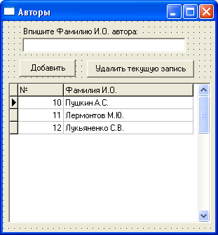

Типы данных Paradox 7
| Тип | Буква | Описание |
|---|---|---|
| Alpha | A | Строка от 1 до 255 символов. Размер поля указывается в Size. |
| Number | N | Целое число от -10^307 до 10^308 (15 значащих цифр) |
| $ Money | $ | Число в денежном формате. |
| Short | S | Короткое целое от -32768 до 32767 |
| Long Integer | I | Длинное целое от -2147483648 до 2147483647 |
| Date | D | Дата |
| Time | T | Время с полуночи в миллисекундах |
| Timestamp | @ | Дата и время |
| Memo | M | Строковое поле неограниченной длины. В разделе Size можно указать длину от 1 до 240 символов, остальные символы хранятся в файле с таким же именем, но расширением mb. |
| Formated Memo | F | Как Memo, но также имеются дополнительные возможности: указать тип и размер шрифта, цвет символов, способ оформления... |
| Graphic | G | Графический файл сохраняется прямо в поле. |
| Logical | L | Логический тип. |
| Autoincrement | + | Целое число, увеличивающееся на единицу автоматически, при добавлении новой записи (счетчик). |
| Bytes | Y | Двоичные данные. |
| Binary | B | Двоичные данные. Как и Memo, хранятся в отдельном файле. Обычно содержат аудио- или видео-данные. |
Итак, вводим такие поля:
| Field | Type | Size |
|---|---|---|
| Key1 | + | |
| Avtor | I | |
| Nazvanie | A | 100 |
| Exemp | S | |
| Cena | $ | |
| Date | D | |
| Prim | M | 200 |
Теперь нажмите кнопку "Save As", файл назовите books и сохраните его в папке d:\data.
Здесь будут храниться данные о книгах.
Поле с автором мы установили как целое.
Позже мы сделаем еще одну таблицу, и в ней будем вести учет всех авторов.
И обе таблицы у нас будут объединены.
Теперь, если вы взгляните на папку d:\data, то обнаружите там два файла:
books.db – сама таблица
books.MB – Memo поле таблицы
Вот теперь настало время создать приложение, которое будет работать с этой таблицей.
Главная форма у нас уже есть, так что сразу создаем модуль данных (File – New – Data Module).
В свойстве Name напишите fDM, а сам модуль сохраните как DM.
Сразу же перейдите на главную форму и с помощью File – Use unit свяжите ее с DM.
Теперь устанавливаем на DM компонент Table с вкладки BDE.
В свойстве DatabaseName компонента впишите адрес нашей базы: "d:\data".
В свойстве TableName выберите нашу таблицу books.db.
Изменим имя таблицы, и укажем TBooks в свойстве Name компонента Table1.
Так как у нас в приложении будет более одной таблицы, желательно каждой из них дать осмысленное имя, чтобы потом не запутаться.
Сразу же устанавливаем на DM компонент DataSource с вкладки Data Access.
Имя компонента изменим на DS1, чтобы было покороче.
В свойстве DataSet выберем нашу таблицу.
Переходим на главную форму.
Устанавливаем главное меню и создаем такие пункты:
"Файл" - "-", "Выход" "Редактирование" - "Добавить книгу", "Добавить автора" "Сортировка" - "По автору", "По названию книги" "Помощь" - "О программе"
Теперь установим панель, свойству Align присвоим alTop, чтобы она заняла весь верх, свойство Caption очистим и бросим на нее два компонента Label, один под другим.
На первой напишем: "Всего книг:", на второй – "На общую сумму:".
Как следует из названий, эти данные мы будем выводить на панель.
Ниже устанавливаем сетку DBGrid с вкладки Data Controls.
Свойство Align переведем в alClient.
В свойстве DataSource выберем наш DS1.
Свойство ReadOnly переведем в True, так как для редактирования данных у нас будут другие инструменты, сетка нужна только для просмотра.
Теперь переходим на окно DM, выделяем компонент с таблицей и открываем ее, установив Active в True.
На главной форме сетка должна отображать данные таблицы, пока еще пустые.
Однако заголовки столбцов не очень привлекательны с точки зрения клиента.
Исправим это.
Выделите таблицу TBooks, и дважды щелкните по нему.
Должно появиться окно редактора полей:

Теперь щелкните правой кнопкой по этому окну и выберите команду Add all fields (добавить все поля).
Выделяем поле Key1.
Оно нам нужно только как счетчик записей, так что пользователю его можно не отображать.
Спрячьте его, установив его свойство Visible в False.
Поле исчезло с сетки, но не потерялось – оно по-прежнему присутствует в таблице.
Далее выделите поле Avtor.
Здесь нас интересуют два свойства: DisplayLabel и DisplayWidth.
Первое отвечает за выводимый текст названия колонки, напишите здесь "Автор".
Второе отвечает за ширину колонки.
Установите 5, так как у нас здесь будут только цифры.
У поля Nazvanie измените выводимый текст на "Название книги".
У поля Exemp измените выводимый текст на "Кол-во экз.".
У поля Cena измените выводимый текст на "Цена".
У поля Date измените выводимый текст на "Дата пост.".
Наконец, поле Prim должно содержать аннотацию к книге, но поскольку это поле типа Memo, то в сетке оно все равно не выйдет.
Поэтому спрячьте это поле, также как поле Key1.
Поскольку наше приложение должно еще уметь подставлять фамилию автора книги вместо цифры, нам нужно сделать еще одну таблицу.
Снова запустите утилиту Database Desktop.
Дальше все, как и в прошлый раз: File – New – Table.
Тип таблицы Paradox 7.
Первое поле назовите Key2.
В принципе, как именно мы назовем ключ, особой разницы нет, просто мы его так назвали, чтобы не путать с первым ключом.
Итак, тип поля – Autoincrement.
Второе поле назовите FIO, тип – Alpha, размер – 30 символов.
Больше полей нам не требуется.
Конечно, можно было бы сделать отдельные поля на фамилию, на имя и отчество, однако такие усложнения займут больше времени и не добавят новых знаний, так что их не стоит делать в учебной программе.
Нажимаем кнопку "Save as", имя таблице даем avtors, а папку для таблицы – "d:\data".
Можно выходить из утилиты, таблица уже существует.
Теперь нам потребуется форма для редактирования авторов, а также еще по одному компоненту Table и DataSource.
Вначале бросьте эти компоненты в окно DM.
Таблицу переименуйте в TAvtors, а DataSource – в DS2.
Далее, у таблицы в свойстве DatabaseName напишите адрес нашей базы данных – d:\data, а в свойстве TableName выберите таблицу avtors.db.
У компонента DS2 в свойстве DataSet выберите компонент TAvtors.
Теперь приступаем к форме редактирования авторов.
Создаем новую форму, переименовываем ее в fAvtors, в свойстве Caption пишем "Авторы", свойство BorderStyle переводим в bsDialog, с помощью File – Use Unit добавляем к форме модуль DM.
Теперь сохраняем форму под именем Avtors.
Далее, устанавливаем на форму следующие компоненты:
Label – напишите на ней следующий текст: "Впишите Фамилию И.О. автора:"
Обычный Edit.
Очистите у него свойство Text, а в свойстве MaxLength (максимальная длина) укажите 30.
Именно такой размер мы указали у поля FIO при проектировании таблицы.
Ниже устанавливаем две кнопки, на которых пишем: "Добавить" и "Удалить текущую запись".
Еще ниже – сетку DBGrid, в свойстве DataSource которой нужно выбрать DS2.
Все, приготовления окончены, можно переводить таблицу TAvtors в активное состояние (Active переводим в True).
У вас должна получиться форма вроде этой:
Кнопку "Добавить" сделайте пока недоступной.
Мы будем давать пользователю доступ к ней тогда, когда он что-нибудь введет в поле Edit.
Теперь так же, как мы редактировали названия полей в первой таблице, сделайте это во второй.
Поле Key2 прятать не нужно, просто в заголовке столбца укажите "№".
А в заголовке второго столбца – "Фамилия И.О.".
Перед тем, как продолжить создание нашего библиотечного каталога, необходимо познакомиться с методами редактирования данных таблицы.